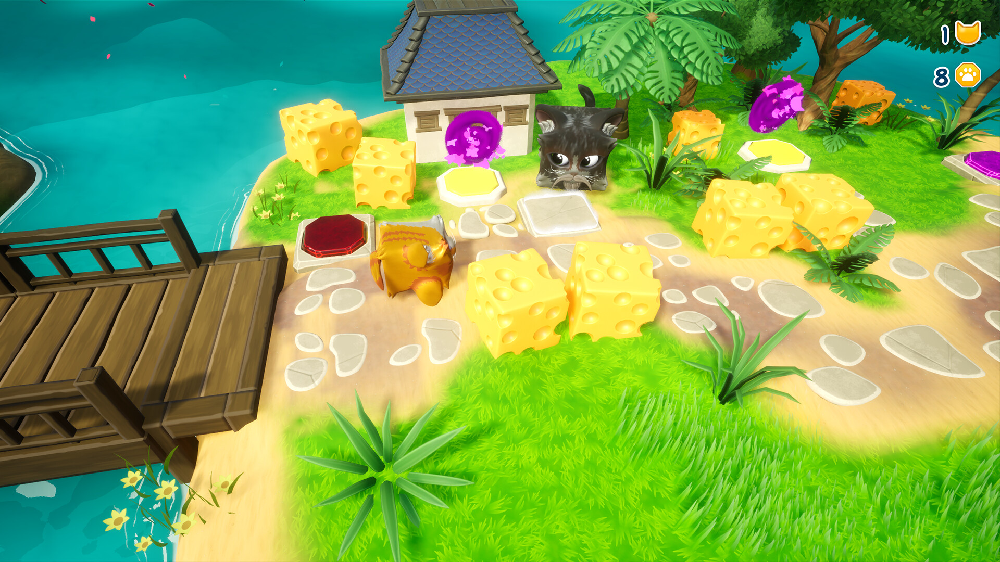
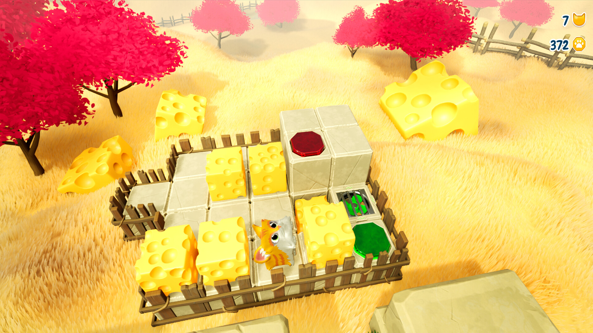
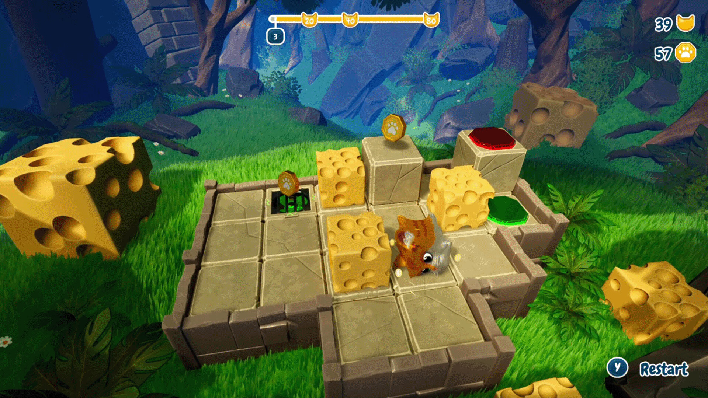
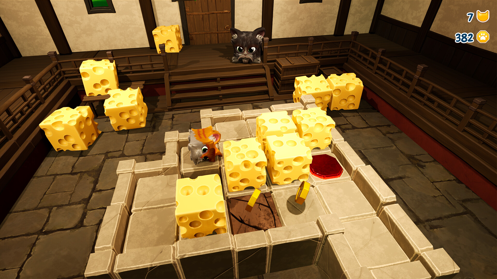
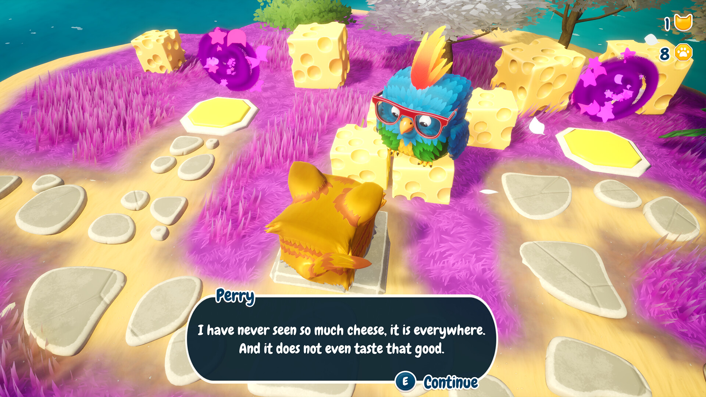

Award-Winning Puzzle Fun!
Best Game Idea
The Great Winter Pitch
2023
Cerebral Puzzle
Showcase
2026
Debut Festival
2025
The Great
Summer Pitch
2023
Also selected for the Playtester.io Showcase Demo and Steam Next Fest Video 2023 Showcase.

Roll on a cozy adventure
Play as Mewton, a cube shaped cat who travels to Roll island. Roll on a cozy adventure filled with cheese. Lots of cheese. Your mission? Push, strategize, and clear the path to the big red button!
Lots of levels
Clear the path to the big red button on as few rolls as possible. All while unlocking more levels, worlds and even new looks!


Restore a world filled with cheese.
For each cheesy level completed you get one step further to solving the mystery of the cheese. Meet some old friends along the way giving you clues of the origin of the mystery cheese.


Press impressions
“A relaxing and entertaining experience”
“An exceptionally polished Sokoban-style logic puzzle”
“Brain-teasing fun and visual cuteness coexist”
“Lost in Cheese Is a Cozy New Indie Gem”
“I Got Completely Lost in Cheese… And Loved It”
From the showcase
“Thank you for putting something special out there. We’re really looking forward to seeing where Lost in Cheese goes next.”
Playtester.io
Say hello to SnøVittra
Let’s talk cheese.
Questions about the game, press enquiries, or just saying hello? We’d love to hear from you.
Available now on